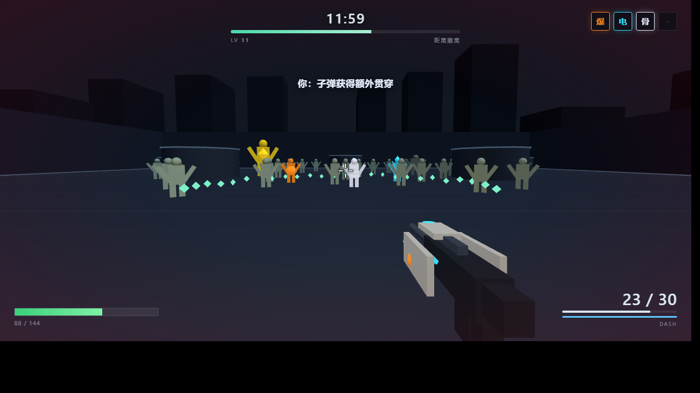

每个都是完整可玩的浏览器 demo，点开就跑，零安装。设计文档、实现记录和自检结果都在各自仓库目录里。

在立体丧尸城市里飞檐走壁、边移动边射击。每次进化都会让对应变异同时进入尸潮 —— 你不只构筑自己，也在亲手塑造这一局必须面对的末日。
开始游玩 →完整原版战役，外加一个系统性实验：每一枪都可能改写敌人引用了谁。3 大关 18 波次、14 种故障、7 把武器，风险自定，没有隐藏死亡税。
开始游玩 →按 PlaySense 改进方案重做的原版锚点防守，主题是「诊断式射击」。波次预览可下注、可提前召唤，商店数学透明，种子可复现（URL 加 #12345）。
?map=flat 回到改造前的平面地图版本 ·
?evolution=off 回到旧的两层升级流程 ·
?seed=12345 固定种子复现整局 ·
?debug=1 启动即开调试面板